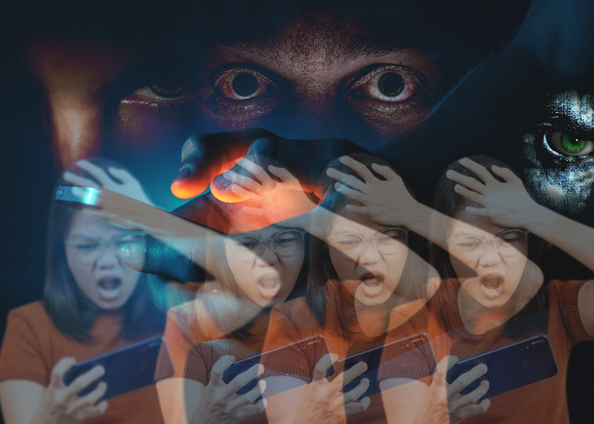
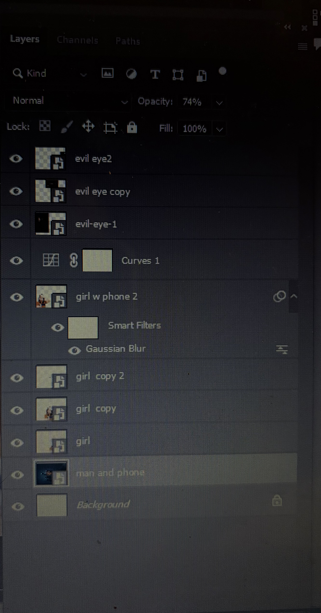

This project explores how digital culture can distort emotion, identity, and reality. I wanted the composition to feel overwhelming and psychologically intense, almost like being trapped inside a stream of images, reactions, and fear. The repeated figure holding the phone suggests panic, overstimulation, and the way technology can multiply emotional responses instead of calming them. The eyes layered throughout the image add a sense of surveillance, pressure, and psychological fragmentation, making the piece feel both personal and unsettling.
The concept was influenced by collage traditions connected to Dada, Surrealism, and more contemporary digital photomontage. I was interested in combining realism with distortion so the final image would feel emotionally truthful even though it is clearly constructed. The overlapping figures and dramatic facial imagery create tension between what is seen, what is felt, and what is imagined. I wanted the piece to reflect how visual media can exaggerate emotion while also shaping how people experience fear, identity, and attention.
To build this composition, I used layer masking to isolate and combine multiple images without permanently deleting parts of them. This helped me blend the repeated figure, the large face, and the eye details into one image while keeping control over placement and transparency. I also used opacity changes and layering to create the ghosted repetition effect, which adds to the feeling of motion and emotional overload.
I used blur and tonal adjustments to help unify the images and create a darker, more dramatic atmosphere. The smart filter visible in my layers shows that I used blur as part of the editing process, and the curves adjustment helped control contrast and mood. Most of the images I used were free-use or accessible online sources. I almost made an account to use one image, but I found a similar one that worked just as well, so I stayed with images that fit the project without needing that extra step. Overall, I used masking, layering, opacity, blur, and tonal edits to make the final montage feel cohesive and emotionally charged.

